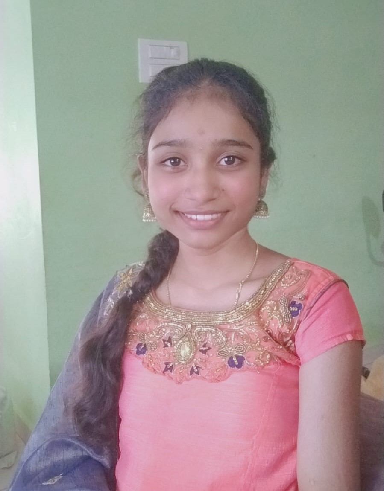
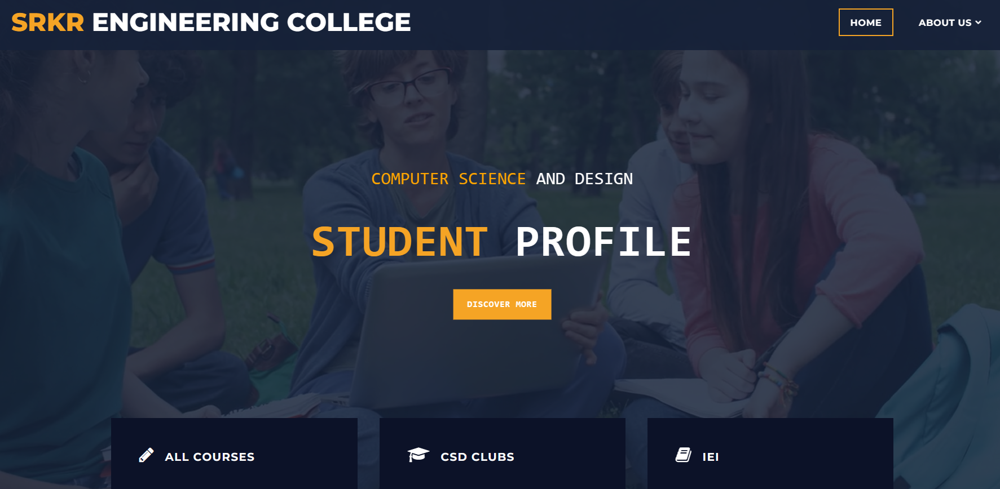
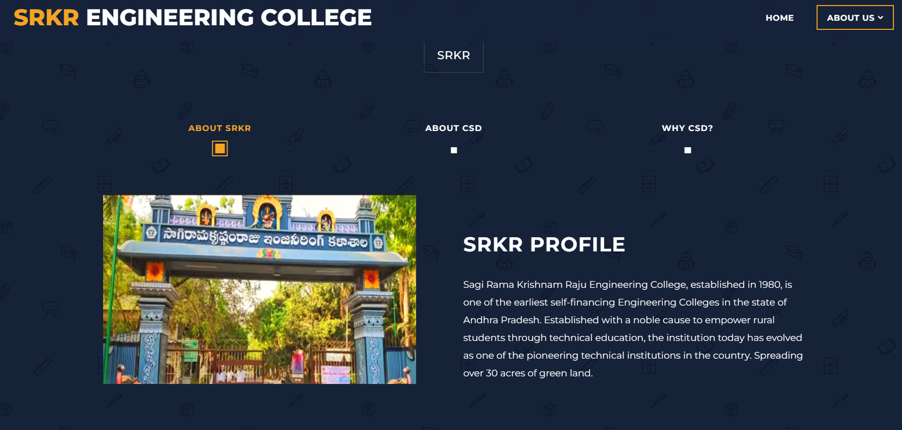
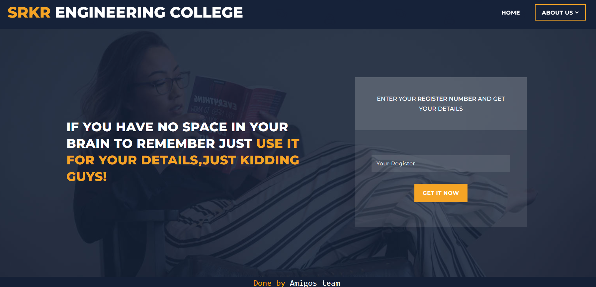

Hi, I am HimaSri. A compuer science and design student

My name is HimaSri, and I am currently in my second year of engineering at SRKR Engineering College, specializing in Computer Science and Design. I completed my secondary education at Sri Chaitanya Techno School and my intermediate education at Tirumala Junior College with an outstanding score of 96.4%.
Driven by a passion for continuous learning, I am deeply interested in exploring new concepts and technologies within the realm of computer science. With a strong aptitude for collaboration and effective communication, I thrive in team-oriented environments where diverse perspectives converge to achieve common goals.
My aspiration is to secure a rewarding position in a reputable software company where I can contribute my skills and knowledge to meaningful projects. Additionally, I am actively engaged as a passive member of a startup initiative initiated by our esteemed seniors, further enhancing my exposure to real-world industry practices and entrepreneurial endeavors.
Education

Engineering:
SRKR Engineering College,2022-2026
Intermediate:
Tirumala junior College,2020-2022
Schooling:
Sri Chaitanya Techno School,2020
Skills
-->>C programming
-->>Python
-->>Java
-->>Html,css,js basics
-->>basics of 3D maya
-->>video editing basics
-->>Team management
-->>Communication Skills
-->>blender basics
-->>Canva
Projects
Design thinking:
Utilizing design thinking, we effectively addressed several challenges in our classroom environment. The absence of a comfortable board, projector, and adequate lunch space posed significant obstacles to teaching and learning. Through a systematic application of design thinking principles, we engaged in collaborative problem-solving processes. By empathizing with the needs of students and educators, defining core issues, ideating innovative solutions, prototyping interventions, and rigorously testing their effectiveness, we successfully resolved these challenges. Our interventions included installing multifunctional whiteboards, integrating high-quality projector systems, and optimizing space for lunchtime activities. These solutions not only improved the physical infrastructure but also fostered a more dynamic and inclusive learning environment. Overall, our experience highlights the effectiveness of design thinking in overcoming complex problems within educational settings.
Student profile management:
This project entailed the construction of a dynamic website with the capability to retrieve and display detailed student information and achievements upon entering their register number. Utilizing a comprehensive array of web development tools and languages including HTML, CSS, and PHP, our team meticulously crafted a user-friendly interface coupled with robust backend functionalities. Recognizing the multifaceted nature of the endeavor, we adopted a collaborative approach, assembling a dedicated team to synergize diverse skill sets and perspectives. Through effective delegation and coordination, each team member contributed their expertise, ensuring the seamless integration of design elements and functionality. Central to our project methodology was the iterative refinement process, wherein we solicited and incorporated feedback from both team members and stakeholders. This iterative approach not only enhanced the overall quality of the website but also facilitated continuous improvement throughout the development lifecycle. In addition to technical proficiency, our project underscored the importance of effective teamwork in achieving project goals. Regular communication, mutual support, and shared accountability were instrumental in overcoming challenges and maximizing productivity. Upon completion, the website emerged as a testament to our collective efforts, seamlessly blending aesthetic appeal with robust functionality. By providing a centralized platform for accessing student information and achievements, our project aimed to streamline administrative processes and enhance user experience within educational institutions. Moving forward, the insights gained from this project will inform our future endeavors, emphasizing the value of collaboration, innovation, and continuous improvement in achieving project success.
  Community service project:
During our holiday trip to our native place, we undertook a survey to assess the level of technological integration among local shops. We systematically recorded data on various parameters such as digitalization, presence on Google Maps, and possession of a website. This initiative aimed to gain insights into the extent to which local businesses have embraced technology for their operations and marketing efforts. Our findings shed light on the current state of technological adoption within the local retail landscape, providing valuable information for both businesses and potential customers.
In addition to these parameters, we also examined the usage of point-of-sale (POS) systems, online ordering platforms, and social media presence among the surveyed shops. By gathering this comprehensive data, we aimed to identify trends in technology adoption and highlight areas where businesses could potentially improve their digital footprint. Through interviews and observations, we gathered qualitative insights into the challenges and benefits associated with incorporating technology into traditional brick-and-mortar establishments. This survey serves as a valuable resource for understanding the evolving landscape of small businesses in our native area and provides actionable recommendations for enhancing their competitiveness in an increasingly digital world.